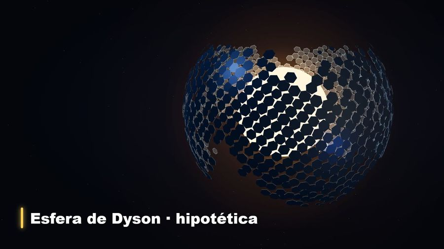
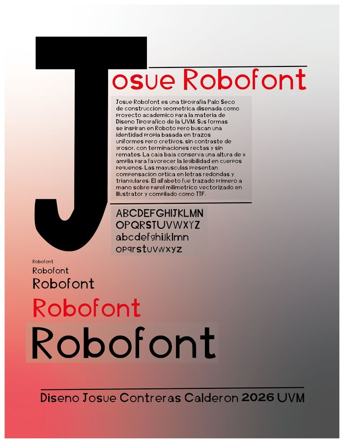
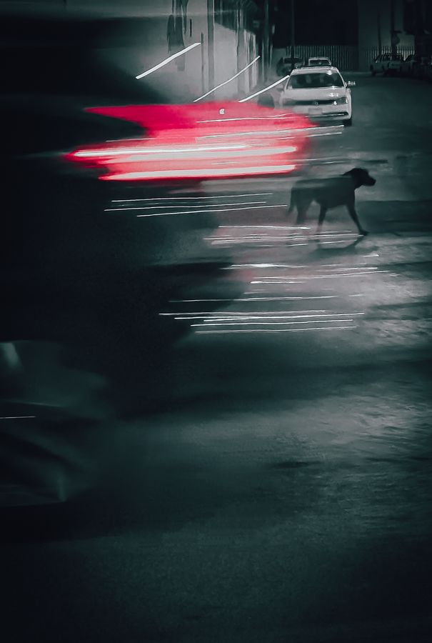
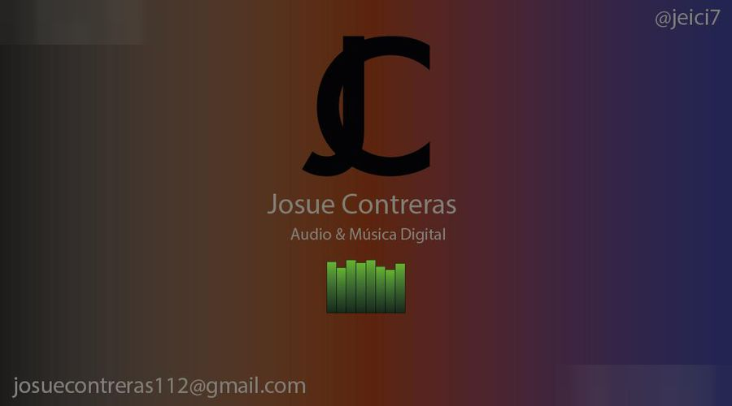
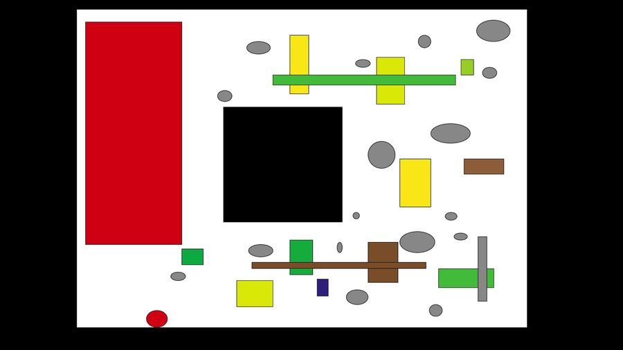

Diseño digital · motion · fotografía
Cuento historias con imagen fija y en movimiento: fotografía, tipografía, cartel y video.
Proyectos

Fotografía · 2026
Caminante
Serie en blanco y negro sobre la ciudad de noche vista por alguien que sale del trabajo y regresa a casa.

Motion y video · 2026
El Bosque Oscuro
Video de seis minutos sobre la paradoja de Fermi, con escenas 3D procedurales y tipografía sincronizada con la voz.

Tipografía e identidad · 2026
Josue Robofont
Una fuente geométrica trazada a mano, vectorizada y compilada como archivo TTF instalable.
Cartel · 2025
Ecos de Marfil
Cartel para impresión con doble exposición y una atmósfera invernal hecha en Photoshop.

Fotografía · 2026
Dualidad
Dos velocidades en un mismo encuadre: el tráfico de la hora de salida y un perro que cruza con calma.

Tipografía e identidad · 2025
Monograma JC
Un monograma propio probado en papelería y en redes sociales.

Motion y video · 2025
Formas de la desigualdad
Un boceto vectorial que usa el lenguaje de Malévich para hablar de desigualdad social, explicado en video.
Sobre mí
Soy Josué Contreras, estudiante de la Licenciatura en Diseño Digital en la Universidad del Valle de México. Me interesan la imagen en movimiento, la postproducción y los efectos visuales, sobre todo para contar temas de ciencia y del espacio.
Mi perfil es técnico: dirijo un flujo automatizado de producción de video para mi canal de divulgación espacial, Factor Cosmos, y me interesa todo lo que pasa entre la idea y el render final. Busco prácticas y colaboraciones en motion graphics, edición y postproducción.
Herramientas
- Adobe Photoshop
- Adobe Illustrator
- Adobe Lightroom
- Calligraphr
- Cubase
Formación
Licenciatura en Diseño Digital, UVM (en curso)
Contacto
¿Tienes un proyecto de video, motion o fotografía? Escríbeme.